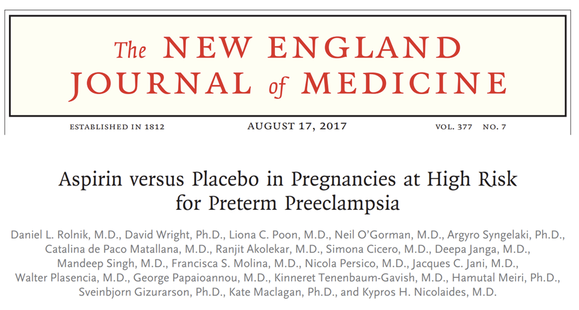
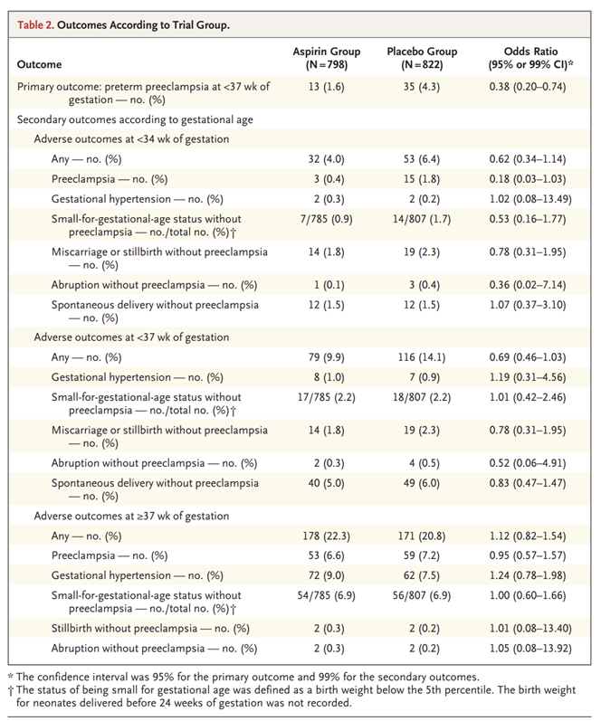
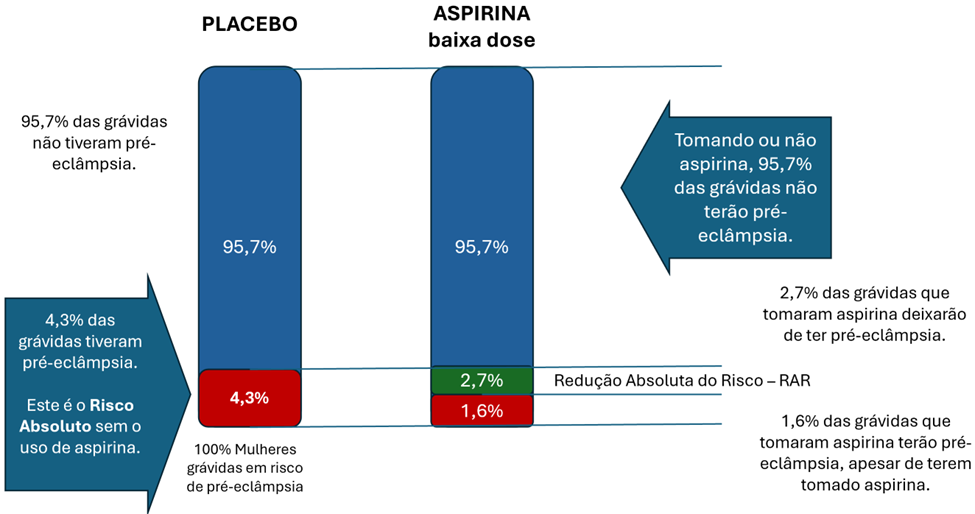
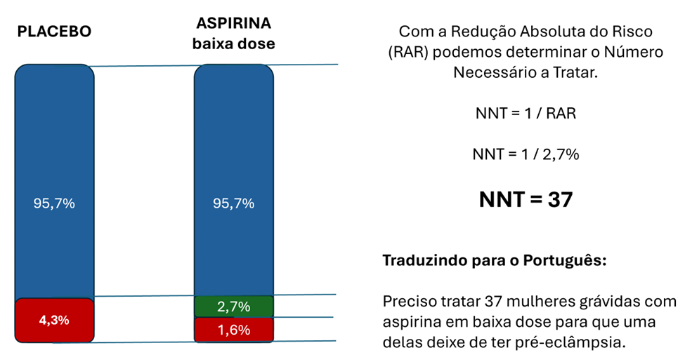
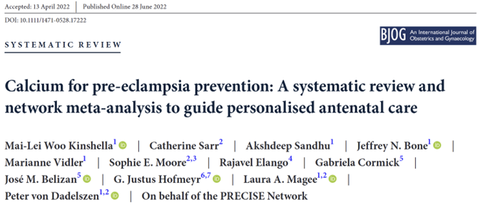
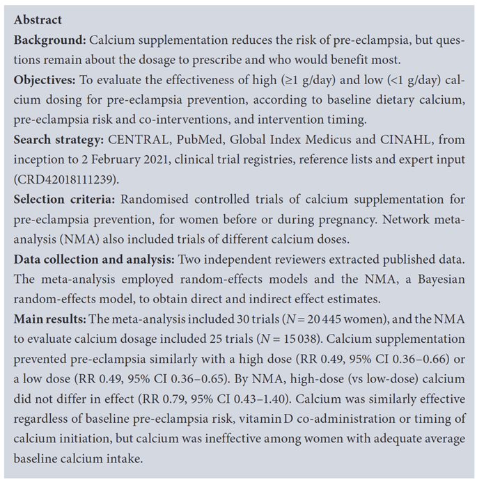
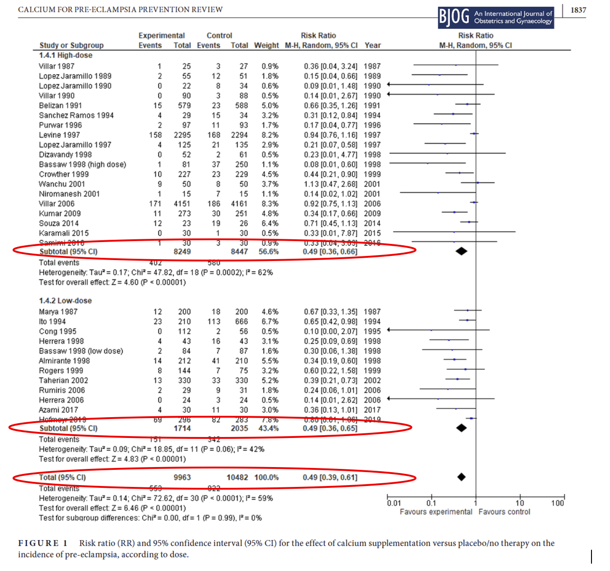
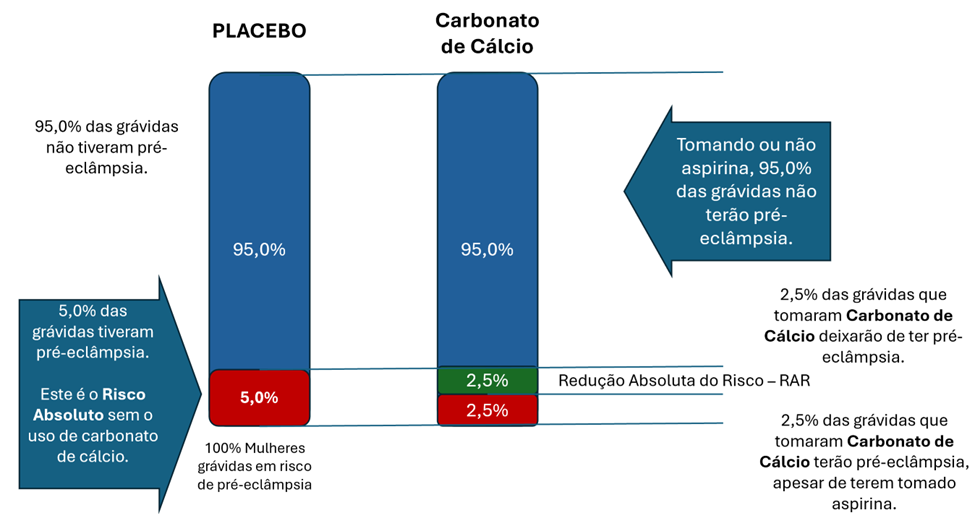
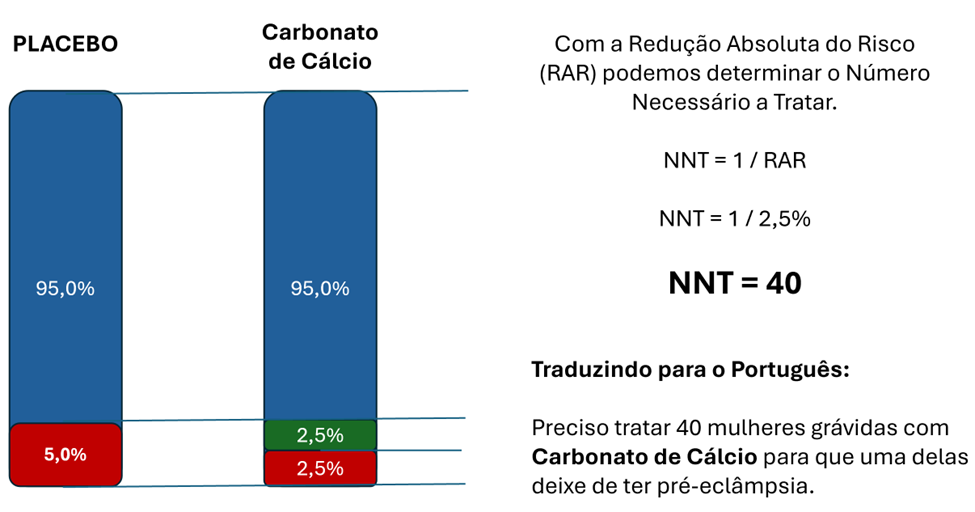

Medicina Baseada em Evidências
The 5 As of evidence-based practice - website desenvolvido pela Dunkin University. This guide offers insights and resources for navigating the principles and procedural steps of Evidence-Based Practice.
Introdução
Nas semanas anteriores tivemos a oportunidade de revisar alguns conceitos da epidemiologia clínica, como prevalência, incidência, risco absoluto, risco relativo, redução absoluta do risco, número necessário a tratar (NNT) e número necessário para causar dano (NNH).
Usamos alguns exemplos para ilustrá-los, bem como nos exercícios propostos para a segunda semana. Mas se você prestou atenção, falamos bastante sobre as dúvidas do Dr. Josias ao atender a gestante Mariela. Ele se perguntava sobre a eficácia do uso de aspirina e carbonato de cálcio no seu caso. Estava em dúvida sobre qual era o real benefício do uso destes medicamentos. Reformulamos suas dúvidas usando a estratégia PICO da seguinte forma:
| P (paciente ou população): gestante em risco de pré-eclâmpsia. Há uma diferença aqui quanto à população - para cada uma delas, a população muda um pouco. Para carbonato de cálcio, a população seria “estar gestante” e para aspirina a população passa a ser “gestante em risco de desenvolver pré-eclâmpsia. Vamos ver isto com detalhes mais adiante. |
| I (intervenção): temos duas no momento – (1) Aspirina e (2) carbonato de Cálcio. |
| C (Comparação): Nenhuma medicação ou uso de placebo. Para ambos os casos, a intervenção seria fazer ou não-fazer. Não uma comparação entre drogas distintas, com efeitos comparáveis. |
| O (Outcome): ocorrência de pré-eclâmpsia – e demais eventos relacionados à pré-eclâmpsia que veremos adiante. |
Se você já está dominando a estratégia PICO e aproveitou para abrir os documentos e artigos das semanas passadas, já deve ter descoberto as respostas para as dúvidas do Dr. Josias. Se não é este o teu caso, não se preocupe. Vamos fazer esta caminhada passo a passo até chegarmos às respostas que queremos.
|
Fontes que apresentei nas semanas anteriores:
Manual de Gestação de Alto Risco do Ministério da Saúde
Principais Questões sobre Profilaxia da pré-eclâmpsia no pré-natal
Em estratégia contra a pré-eclâmpsia, suplementação de cálcio passa a ser universal para gestantes é a página do Ministério da Saúde apresentando esta política nacional.
NOTA TÉCNICA CONJUNTA Nº 251/2024-COEMM/CGESMU/DGCI/SAPS/MS E CGAN/DEPPROS/SAPS/MS
O artigo ASA use in patients at risk of preeclampsia. apresenta um sumário de diversas informações sobre o impacto da aspirina na ocorrência de pré-eclâmpsia.
Antiplatelet agents for preventing pre-eclampsia and its complications.
Aspirin versus Placebo in Pregnancies at High Risk for Preterm Preeclampsia.
Vamos começar respondendo a cada uma das perguntas PICO que elaboramos anteriormente. Começando pela Aspirina.

Neste artigo encontramos no resumo as seguintes informações:
In this multicenter, double-blind, placebo-controlled trial, we randomly assigned 1776 women with singleton pregnancies who were at high risk for preterm preeclampsia to receive aspirin, at a dose of 150 mg per day, or placebo from 11 to 14 weeks of gestation until 36 weeks of gestation. The primary outcome was delivery with preeclampsia before 37 weeks of gestation. The analysis was performed according to the intention-to-treat principle. RESULTS A total of 152 women withdrew consent during the trial, and 4 were lost to follow up, which left 798 participants in the aspirin group and 822 in the placebo group. Preterm preeclampsia occurred in 13 participants (1.6%) in the aspirin group, as compared with 35 (4.3%) in the placebo group (odds ratio in the aspirin group, 0.38; 95% confidence interval, 0.20 to 0.74; P=0.004). Results were materially unchanged in a sensitivity analysis that took into account participants who had withdrawn or were lost to follow-up. Adherence was good, with a reported intake of 85% or more of the required number of tablets in 79.9% of the participants. There were no significant between-group differences in the incidence of neonatal adverse outcomes or other adverse events. CONCLUSIONS Treatment with low-dose aspirin in women at high risk for preterm preeclampsia resulted in a lower incidence of this diagnosis than placebo. |
Vamos traduzir para o português e entender o que está escrito ali:
Neste ensaio multicêntrico, duplo-cego, controlado por placebo, foram randomizadas 1776 mulheres com gestação única e alto risco de pré-eclâmpsia prematura para receber aspirina, na dose de 150 mg por dia, ou placebo, de 11–14 semanas até 36 semanas de gestação. O desfecho primário foi o parto por pré-eclâmpsia antes de 37 semanas de gestação. A análise seguiu o princípio da intenção de tratar.
Decifrando o que está escrito – 1776 mulheres em alto-risco de pré-eclâmpsias, metade recebeu aspirina 150mg ao dia, a outra metade recebeu placebo. Acompanharam ao longo da gestação e analisaram se desenvolviam pré-eclâmpsia antes de 37 semanas de gestação.
Detalhe: Não precisa se preocupar com isto agora, mas se você estiver se perguntando “o que é intenção de tratar (intention-to-treat)”, é uma forma de analisar os resultados considerando todas as pacientes envolvidas no estudo desde o início. Este método aproxima mais os resultados em direção do real efeito do tratamento (efetividade do tratamento). É uma forma alternativa à análise por protocolo (per protocolo analysis), que considera somente os pacientes que concluíram o seguimento no estudo.
RESULTADOS – Um total de 152 mulheres retirou o consentimento durante o estudo, e 4 foram perdidas ao seguimento, permanecendo 798 participantes no grupo aspirina e 822 no grupo placebo. A pré-eclâmpsia prematura ocorreu em 13 participantes (1,6 %) no grupo aspirina, em comparação com 35 (4,3 %) no grupo placebo (razão de chances [odds ratio] no grupo aspirina, 0,38; intervalo de confiança de 95 %, 0,20–0,74; P = 0,004). Os resultados mantiveram-se semelhantes em análise de sensibilidade que considerou as participantes que desistiram ou foram perdidas ao seguimento. A adesão foi satisfatória, com 79,9 % das participantes relatando ingestão de 85 % ou mais dos comprimidos prescritos. Não houve diferenças significativas entre os grupos quanto à incidência de desfechos adversos neonatais ou outros eventos adversos.
Decifrando o que está escrito – A razão de chances (uma forma específica de risco relativo, não se preocupe com isso agora – interprete esta informação como sendo o mesmo risco relativo que você já conhece) foi de 0,38 e o intervalo de confiança variando entre 0,20 e 0,74. Este Risco Relativo de 0,38 é menor do que 1. Portanto, o risco de pré-eclâmpsia com a intervenção (aspirina 150mg ao dia) é menor do que o risco sem a aspirina – quem recebeu placebo. Se fosse maior do que 1, a aspirina aumentaria o risco de pré-eclâmpsia. Sobre a análise de sensibilidade, não se preocupe com isso agora. Nada mais é do que um escrutínio estatístico para se ter certeza de que o resultado encontrado está correto. Terminam falando que as pacientes toleraram tomar aspirina diariamente.
Dentro do artigo encontramos toda uma descrição minuciosa da metodologia – não se preocupe com isto hoje. E encontramos também uma tabela apresentando os principais resultados encontrados. Ali encontramos que 13 mulheres que tomaram aspirina e 35 que receberam placebo, desenvolveram pré-eclâmpsia. Em seguida descrevem os desfechos secundários analisados no estudo (não é o que estamos observando hoje, não se preocupe. Se concentre no desfecho primário (primary outcome), pré-eclâmpsia antes de 37 semanas de gestação.

Vamos nos debruçar sobre estes números agora. Veja as imagens abaixo:

Em porcentagem, 95,7% das mulheres em risco de desenvolver pré-eclâmpsia não tiveram pré-eclâmpsia, mas 4,3% tiveram. De onde vieram estes números? Do grupo placebo, que se comporta como a população normal, livre de intervenção. 4,3% de incidência de pré-eclâmpsia está próximo dos valores que encontramos naquele artigo brasileiro intitulado Prevalência de pré-eclâmpsia no Brasil: Uma revisão integrativa - 6,7% para pré-eclâmpsia, 1,7% a 6,2% para eclâmpsia e prematuridade associada a hipertensão entre 0,5% e 1,7%.
Na segunda coluna temos que apenas 1,6% das gestantes tiveram pré-eclâmpsia no grupo que tomou aspirina. Isto nos leva a encontrar que 2,7% das gestantes que usaram aspirina não tiveram pré-eclâmpsia. Estas 2,7% de mulheres teriam pré-eclâmpsia, se não estivessem tomando aspirina.
Mas e por que as mesmas 95,7% das gestantes continuaram não tendo pré-eclâmpsia? Porque não tiveram com o placebo e continuam não tendo com a aspirina. Para estas mulheres, nem o placebo, nem a aspirina fizeram diferença para elas, uma vez que não tinham e não terão pré-eclâmpsia.
Resumindo, de todas as mulheres que usaram aspirina (100% do braço intervenção), apenas 2,7% destas mulheres realmente se beneficiaram desta medida preventiva. 97,3% tomaram a aspirina em vão, sendo que 95,7% destas não teriam pré-eclâmpsia de qualquer maneira e 1,6% das mulheres tiveram, mesmo tomando aspirina.
Isto nos leva à próxima imagem, onde calculamos que 37 mulheres em risco de pré-eclâmpsia devem ganhar aspirina para que uma delas deixe de ter pré-eclâmpsia.

Se 37 tomaram aspirina e apenas 1 obteve o efeito desejado (evitar a ocorrência de pré-eclâmpsia), 36 tomaram a medicação em vão. De forma grosseira podemos dizer que 35 tomaram e não precisariam ter tomado, pois não teriam pré-eclâmpsia de qualquer maneira, e 1 mulher (menos do que uma, na verdade) tomou, mas teve pré-eclâmpsia mesmo assim.
Vamos ver se respondemos tudo o que queríamos?
P (paciente ou população): gestantes em risco de pré-eclâmpsia. I (intervenção): Aspirina C (Comparação): Nenhuma medicação ou uso de placebo. O (Outcome): ocorrência de pré-eclâmpsia. |
Resumindo os passos e relembrando do PICO:
- Definimos qual a nossa população (mulheres em risco de pré-eclâmpsia);
- Encontramos o risco absoluto nesta população – esta medida veio do grupo controle que usou placebo (Comparação);
- Encontramos o risco no grupo que recebeu a intervenção (aspirina 150mg ao dia) (Intervenção);
- Encontramos o risco relativo, aqui chamado de odds ratio ou razão de chances.
- Calculamos a redução absoluta do risco fazendo uma subtração simples do risco absoluto em quem recebeu placebo e o risco absoluto em quem recebeu aspirina (RAR = 4,3% - 1,6%) e encontramos 2,7%. Ou seja, a redução absoluta do risco é igual a 2,7%. Em português podemos dizer que reduzimos o risco de ocorrência de pré-eclâmpsia em 2,7%, reduzindo de 4,3% para 1,6%. (Outcome)
- Agora que conhecemos a nossa RAR (2,7%), calculamos o NNT e encontramos que 37 mulheres em risco de pré-eclâmpsia devem tomar aspirina 150 mg ao dia para que uma destas mulheres deixe de ter este problema. (Outcome)
Nenhuma conta complicada. Usamos apenas operações básicas que aprendemos na escola – subtração, porcentagem e regras de 3. Só isso.
E o carbonato de cálcio. Vamos seguir os mesmos passos. No artigo Calcium for pre-eclampsia prevention: A systematic review andnetwork meta-analysis to guide personalised antenatal care - uma revisão sistemática e metanálise sobre o tema, encontramos o seguinte resumo:


Em português e com comentários:
A suplementação de cálcio reduz o risco de pré-eclâmpsia, mas ainda há dúvidas sobre a dosagem a prescrever e quais mulheres se beneficiam mais. Trata-se de uma revisão sistemática e metanálise sobre a suplementação de cálcio como medida preventiva para ocorrência de pré-eclâmpsia.
Objetivos: Avaliar a eficácia de doses altas (≥ 1 g/dia) e baixas (< 1 g/dia) de cálcio na prevenção da pré-eclâmpsia, estratificando por ingestão dietética basal de cálcio, risco de pré-eclâmpsia, co-intervenções e momento de início da suplementação. Aqui os autores descrevem todas as comparações que serão analisadas.
Estratégia de busca: Pesquisa nas bases CENTRAL, PubMed, Global Index Medicus e CINAHL, desde a criação até 2 de fevereiro de 2021, além de registros de ensaios clínicos, listas de referências e consulta a especialistas (registro PROSPERO CRD42018111239).
Critérios de seleção: Ensaios clínico-randomizados de suplementação de cálcio para prevenção de pré-eclâmpsia em mulheres antes ou durante a gravidez. A análise em rede incluiu também ensaios com diferentes dosagens de cálcio. Aqui os autores descrevem quais foram os tipos de estudos que entraram nas análises.
Coleta e análise de dados: Dois revisores independentes extraíram os dados publicados. A meta-análise empregou modelos de efeitos aleatórios; a análise em rede utilizou modelo bayesiano de efeitos aleatórios para estimativas de efeitos diretos e indiretos.
Principais resultados:
Meta-análise com 30 ensaios (N = 20 445 mulheres) e análise em rede com 25 ensaios (N = 15 038).
A suplementação de cálcio preveniu pré-eclâmpsia de forma semelhante em altas doses (RR 0,49; IC 95% 0,36–0,66) e baixas doses (RR 0,49; IC 95% 0,36–0,65). Não houve diferença no efeito entre alta e baixa dose.
Pela análise em rede, não houve diferença entre dose alta e dose baixa (RR 0,79; IC 95% 0,43–1,40).
O efeito foi consistente independentemente do risco basal de pré-eclâmpsia, da co-administração de vitamina D e do momento de início da suplementação.
Não houve benefício em mulheres com ingestão dietética média de cálcio considerada adequada.
Dentro do artigo encontramos a seguinte tabela, que nos mostra as análises para altas doses de cálcio, baixas doses de cálcio e combinação entre os dois grupos, ao final. Os resultados estão circulados em vermelho.

Vamos relembrar os passos que demos na nossa análise para a aspirina.
P (paciente ou população): gestantes em risco de pré-eclâmpsia. I (intervenção): carbonato de cálcio C (Comparação): Nenhuma medicação ou uso de placebo. O (Outcome): ocorrência de pré-eclâmpsia. |
Resumindo os passos e relembrando do PICO:
1. Definimos qual a nossa população (mulheres em risco de pré-eclâmpsia);
2. Encontramos o risco absoluto nesta população – esta medida veio do grupo controle que usou placebo (Comparação) – podemos usar a mesma medida do nosso estudo anterior e do artigo brasileiro, com um valor entre 4 e 6% das gestantes em risco desenvolvendo pré-eclâmpsia ao longo da gestação.
3. Encontramos o risco no grupo que recebeu a intervenção (carbonato de cálcio) (Intervenção) – aqui teremos que fazer o caminho inverso. Encontrar o risco absoluto em quem recebeu o carbonato de cálcio a partir do risco relativo;
4. Encontramos o risco relativo – Carbonato de cálcio alta dose (RR 0,49; IC 95% 0,36–0,66) e baixas doses (RR 0,49; IC 95% 0,36–0,65). Não houve diferença no efeito entre alta e baixa dose.
Agora vamos calcular o risco absoluto em quem usou carbonato de cálcio. Partindo de um número inteiro (5%), se temos um risco relativo de 0,49 para altas e baixas doses, teremos que o Risco Absoluto em quem usou carbonato de cálcio no valor de 2,5%. Em outras palavras, não usando Carbonato de Cálcio o risco absoluto de pré-eclâmpsia é de 5%. Usando Carbonato de Cálcio o risco absoluto para pré-eclâmpsia reduz para 2,5%. Agora podemos calcular a Redução Absoluta do Risco.
5. Calculamos a Redução Absoluta do Risco fazendo uma subtração simples do risco absoluto em quem recebeu placebo e o risco absoluto em quem recebeu carbonato de cálcio (RAR = 5,0% - 2,5%) e encontramos 2,5%. Ou seja, a redução absoluta do risco é igual a 2,5%. Em português podemos dizer que reduzimos o risco de ocorrência de pré-eclâmpsia em 2,5%, reduzindo de 5,0% para 2,5%. (Outcome)
6. Agora que conhecemos a nossa RAR (2,5%), calculamos o NNT e encontramos que 40 mulheres em risco de pré-eclâmpsia devem tomar carbonato de cálcio para que uma destas mulheres deixe de ter este problema. (Outcome)


Frente a esta situação, Dr. Josias pode ficar mais tranquilo de saber que tanto a Aspirina quanto a suplementação com carbonato de cálcio produzem benefícios consideráveis para prevenção de pré-eclâmpsia em gestantes. No caso da sua paciente, a gestante Mariela, que tinha medidas de pressão arterial elevadas previamente à gestação, pode ser considerada como hipertensão arterial prévia a gestação – um fator de risco para pré-eclâmpsia. Com isto, devemos começar tanto a aspirina em baixas doses quanto a suplementação de cálcio. Contudo, ele não começou estas medicações somente por que o protocolo ministerial orienta, mas sim por que, em concordância com as recomendações ministeriais e baseado em boas evidências científicas, sabe agora que o risco absoluto de pré-eclâmpsia para Mariela pode se reduzir em torno de 50% a 65% e que ao prescrever aspirina e carbonato de cálcio para 30 a 40 mulheres grávidas com perfil semelhante ao de Mariela, ao menos uma deixará de desenvolver pré-eclâmpsia e terá um final de gestação com menos eventos adversos.
Em tempo – este parágrafo acima é uma generalização. Não tome os valores ao pé da letra, pois não podemos afirmar com certeza que Mariela será a pessoa que se beneficiará destas medidas preventivas.
|
Qual a diferença entre fazer todo este percurso que fizemos nestas semanas e simplesmente seguir o protocolo recomendado pelo Ministério da Saúde? Pode até parecer que foi um trabalho desnecessário, mas agora vocês conhecem um pouco mais o que está dentro desta caixa-preta, como funcionam as comparações e as estatísticas por trás de uma recomendação profilática como esta.
Por ora, todos vocês precisam se apropriar cada vez mais destes princípios da Prática Clínica Baseada em Evidências. Isto tornará a prática de todos trará.
Possivelmente muitos de vocês ocuparão cargos de gestão em diversos níveis no futuro. Ter domínio destas ferramentas é fundamental para poder pautar decisões e desenhar políticas baseadas em evidências.